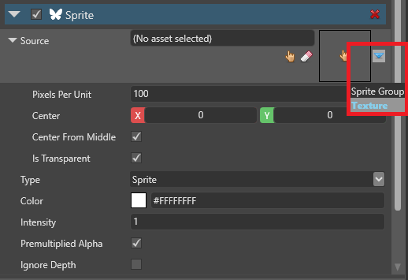
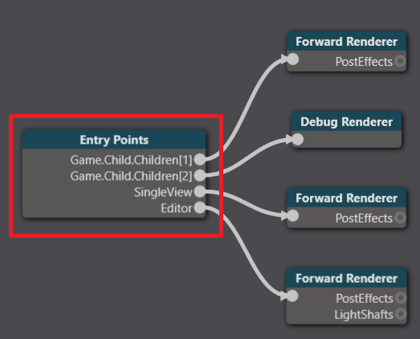
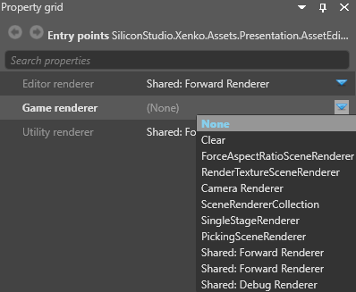
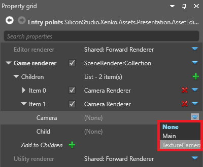

Render textures
Warning
Приносим свои извинения за неудобства. Для этой страницы нет перевода на русский язык. Она будет отображаться на английском языке.
Intermediate Designer Programmer
With render textures, you can send a camera's view to a texture and use the texture on objects in your scene. For example, you can use this to display part of your scene on a TV screen in the same scene, such as security camera footage.
For API details, see Textures and render textures.
1. Create an extra camera slot
Camera slots link the graphics compositor to the cameras in your scene. You need to add a camera slot for a new camera to use. For more information about camera slots, see Camera slots.
In the Asset View (in the bottom pane by default), double-click the Graphics Compositor asset.

The graphics compositor editor opens.

On the left, under Camera slots, click
 (Add).
(Add).
Game Studio adds a new camera slot.
Tip
To rename a camera slot, double-click it in the list and type a new name.

2. Create a camera and bind it to the slot
In your scene, add a camera component to the entity you want to be your camera.

Position the entity so the camera captures the area of the scene you want to render to a texture.
In the entity Property Grid, enable the Camera component using the checkbox.

in the Camera component properties, under Slot, select the slot you created in the previous step.

3. Create a render target texture
In the Asset View, click Add asset and select Texture > Render target.

Game Studio adds a render target texture to your project assets.
4. Place the render target texture in the scene
There are various ways you can use the render target texture.
Example 1: Use the render target texture in a material
In the material properties, under Shading, next to Diffuse map, click
 (Replace) and select Texture.
(Replace) and select Texture.
Click
 (Select an asset).
(Select an asset).Select the Render texture asset and click OK.

Example 2: Use the render target texture in a sprite component
Create an entity and position it where you want to display the texture.
With the entity selected, in the Property Grid, click Add component and add a sprite component.
In the sprite component properties, next to Source, click
(Replace) and select Texture.
Click
(Select an asset).The Select an asset window opens.
Select the Render texture asset and click OK.
If you don't want the texture to be semi-transparent, under the Source properties, clear the Is transparent checkbox.

5. Set up the graphics compositor
To display a render texture in your scene, you need at least two renderers:
- one to render your main camera
- one to render the second camera to the render texture
This page describes the simplest way to do this from scratch, using two cameras and two renderers. Depending on your pipeline, you might need to create a different setup.
Warning
These instructions involve deleting your existing renderers for the game entry point. You might want to make a backup of your project in case you want to restore your pipeline afterwards.
In the graphics compositor editor, select the Entry points node.

In the Property Grid on the right, next to Game renderer, click
(Replace) and select None to delete your existing renderers.
Click
(Replace) and select Scene renderer collection.This lets you set multiple renderers for the game entry point.
1. Render the main camera
Under Game renderer, next to Children, click
(Add) and select Camera renderer.
Next to Camera, click
(Replace) and select your main game camera.Next to Child, select the renderer for your main game camera (eg the forward renderer).

2. Render the texture
Under Game renderer, next to Add to Children, click
(Add) and select Camera renderer.
Game Studio adds a camera renderer to the list of children.
Expand the second camera renderer.

Next to Camera, click
(Replace) and select the camera you want to render to a texture.
Next to Child, click
(Replace) and select RenderTextureSceneRenderer.
Under the RenderTextureSceneRenderer, next to Child, click
(Replace) and select the renderer for your main game camera (eg the forward renderer).
Next to Render texture, click
(Select an asset).The Select an asset window opens.
Select the render texture and click OK.
Game Studio adds the render texture to the renderer.

Your game is now ready to render the camera to the texture in the scene.
Set a render mask
You can use the render mask to filter which groups are rendered in the render texture.
Next to Render mask, click Change values and select the render groups you want the camera to render.

For more information, see Render groups and masks.
Sample
For an example of rendering to a texture in a project, see the Animation sample included with Stride.